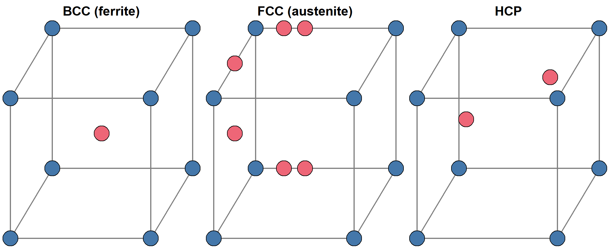
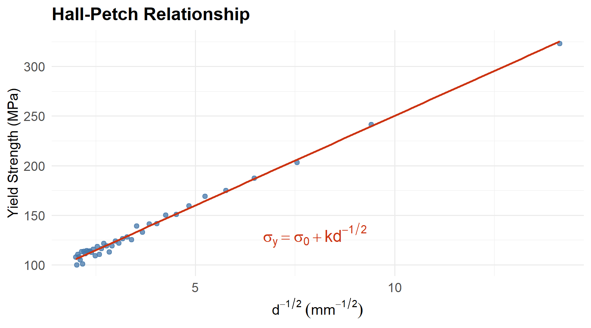
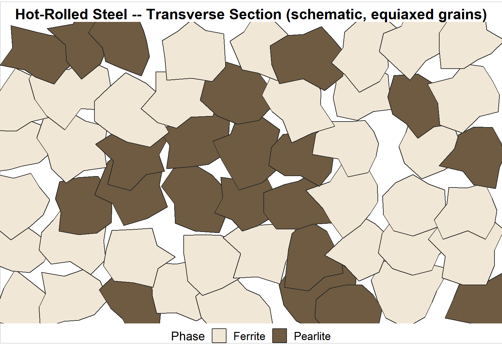
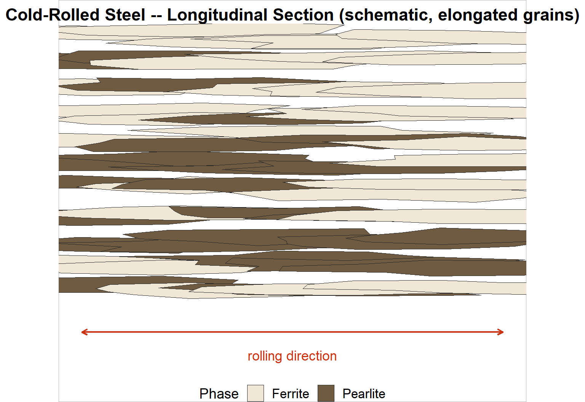
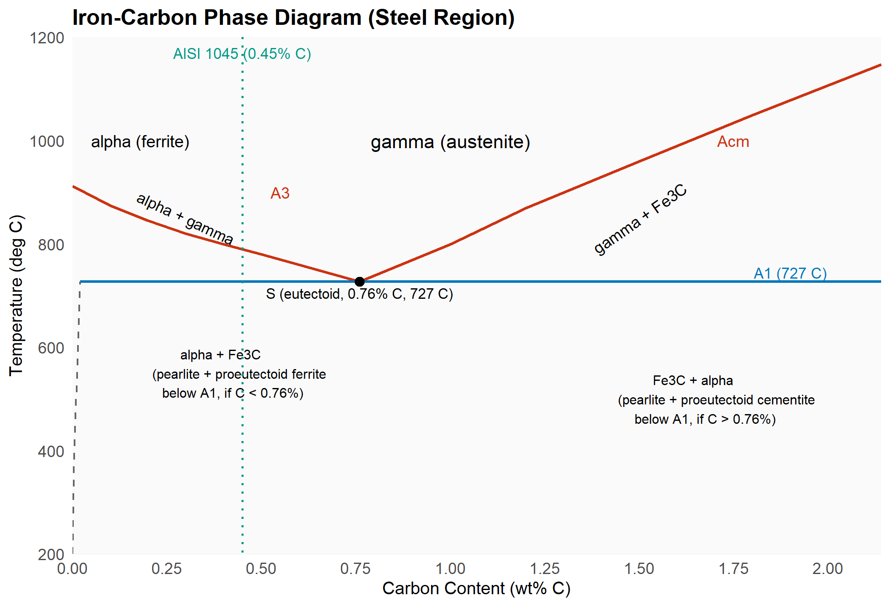
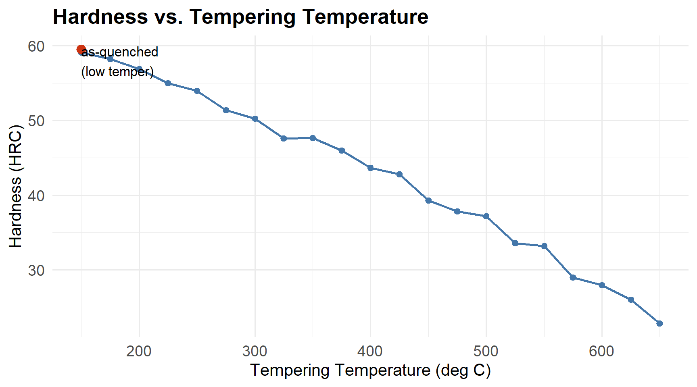

19 Introduction to Metallurgy: Structure and Heat Treatment
19.1 Learning Objectives
By the end of this chapter, you will be able to:
- Explain why a technician needs to understand metallurgy, with examples from automotive, food-processing, and defense manufacturing.
- Describe how atoms pack into crystal structures (BCC, FCC, HCP) and how grain boundaries and dislocations control strength.
- Apply the Hall-Petch relationship conceptually to explain why fine-grained metals are stronger.
- Distinguish hot-rolled steel (HRS) from cold-rolled steel (CRS) by grain shape, surface finish, dimensional tolerance, residual stress, and mechanical properties.
- Read the iron-carbon phase diagram for the steel region (0 to about 2.1 wt% C) and identify ferrite, austenite, cementite, and pearlite.
- Decode an AISI/SAE steel grade (10xx, 41xx, 15xx) to estimate carbon content and alloy content.
- Explain the purpose, process, resulting microstructure, and property changes for annealing, normalizing, quench hardening, tempering, and stress relieving.
- Explain why quenched steel is always tempered, and why low-carbon steel barely hardens.
This chapter is Part A of a two-part introduction to metallurgy and materials testing. Part A (this chapter) covers what steel is made of and how heat treatment changes it. Part B covers how we test steel — tensile, hardness, impact, and metallography — and connects everything you learn here to what you will observe in your own lab reports.
This chapter gives you the theory. It does not repeat the lab procedures — those live in your lab handout and the Labs chapter. Read this chapter before the lab so you can predict what you’ll see; come back to it after the lab to explain what you got.
19.2 Why Technicians Need Metallurgy
A delivery van’s rear axle snaps clean in half on a cold January morning in Thunder Bay, with nobody near it and no collision. A weld on a food-plant conveyor frame cracks after eighteen months of hot, wet washdown cycles. A grade-8 bolt on an aircraft bracket stretches 2 mm under a load it was rated to carry with margin to spare, and now nobody trusts the rest of the batch.
None of these are mysteries once you know what to look for. The axle was likely a low-alloy steel that went brittle below its ductile-to-brittle transition temperature — exactly the phenomenon you’ll test for in the Charpy lab. The weld cracked because heat from welding changed the grain structure and left residual stress in the heat-affected zone. The bolt stretched because someone substituted a lower-grade fastener, or because it was never properly heat treated — its hardness would have told the story in thirty seconds on a Rockwell tester.
Metallurgy is the science of metals: what they’re made of at the atomic level, and how processing — rolling, welding, heat treating, machining — changes their structure and therefore their properties. You don’t need a metallurgy degree to use it. As an electromechanical technician, you need enough metallurgy to:
- Read a material certification and know whether the steel in front of you is even capable of doing the job.
- Recognize a heat-treatment problem — a part that’s too hard and brittle, or too soft and won’t hold a cutting edge.
- Understand why a part failed — was it overloaded, was it the wrong material, or was it processed wrong?
- Specify or verify a process — annealing before machining, hardening a wear surface, stress-relieving a weldment.
TipIndustry application
Automotive: A stamped door hinge is deliberately kept as cold-rolled, unhardened low-carbon steel so it stays ductile and absorbs energy in a crash rather than snapping. Food processing: conveyor shafts and blades are usually austenitic stainless steel (Chapter 18, Section 20.6) specifically because it resists corrosion from washdown chemicals and won’t harden and become brittle if it gets bumped. Defense: armor plate and gun-barrel steels are quenched and tempered to a very specific hardness — too hard and they shatter on impact, too soft and they don’t stop a round.
NoteBefore you read on
Think of a metal part that has failed on you, or that you’ve seen fail — a broken tool, a bent bracket, a stripped bolt. Was it bent (ductile) or did it snap cleanly (brittle)? Keep that failure in mind — by the end of this chapter you should be able to guess why.
Quick check: why metallurgy matters
Question: A maintenance technician needs to replace a broken shaft. The stockroom has “1018 steel” and “4140 steel” round bar of the same diameter. Why might the choice matter, even before either one is heat treated?
Answer: The two grades have different carbon and alloy content (you’ll learn to read this from the numbers later in this chapter), which changes how much they can be hardened, how strong and tough they are as-supplied, and how they weld and machine. Grabbing “steel that fits” without checking the grade is exactly the kind of mistake that leads to the snapped-shaft scenario above.19.3 What Metals Are Made Of
19.3.1 Atoms, Crystals, and Grains
Every metal is made of atoms held together by metallic bonding — the atoms’ outer electrons aren’t tied to any one atom, they move freely through the whole solid like a “sea” of electrons surrounding fixed positive ion cores. That shared electron sea is why metals conduct electricity and heat so well, and why they can bend without breaking: the bonds aren’t tied to specific neighbor pairs, so atoms can slide past each other and the bonding survives.
Those atoms don’t sit randomly. As a molten metal cools and solidifies, the atoms lock into a repeating, orderly 3-D pattern called a crystal lattice — think of a shelf of oranges at the grocery store, where every orange settles into the lowest, most stable position between the ones below it. That repeating pattern, extended in all directions, is a crystal.
Here’s the part that matters for you as a technician: solidification doesn’t start from one point and grow outward as a single perfect crystal. It starts at many points at once — at the mould wall, around impurity particles, anywhere a stable cluster of atoms happens to form first. Each of these starting points grows its own crystal, in its own random orientation, until it bumps into its neighbours. The result is a solid made of thousands to millions of small crystals, all packed together like a 3-D jigsaw puzzle, each one oriented slightly differently. Each individual crystal is called a grain, and the mismatched boundary where two grains meet is a grain boundary.
This is not a minor detail — grain size and grain boundaries control most of the mechanical properties you will measure in the lab. You’ll see grains directly, under a microscope, in the tensile and case-hardening lab (Section 20.5 in Part B) once a polished, etched specimen is examined.
19.3.2 Crystal Structures: BCC, FCC, and HCP
Within a grain, the atoms pack into one of a small number of repeating arrangements, called unit cells — the smallest repeating “building block” of the crystal, like a single tile in a repeating floor pattern. Three arrangements matter for the metals you’ll work with:
- Body-centered cubic (BCC): an atom at each of the 8 corners of a cube, plus one atom in the very center. Picture 8 oranges arranged in a cube frame with one more orange wedged in the middle gap. BCC metals include α-ferrite (low-temperature iron), chromium, and tungsten.
- Face-centered cubic (FCC): an atom at each of the 8 corners, plus one atom centered on each of the 6 faces. This is the tightest, most efficient way to stack spheres — the same pattern as oranges stacked in a pyramid at the grocery store. FCC metals include austenite (high-temperature iron), aluminum, copper, and nickel.
- Hexagonal close-packed (HCP): atoms arranged in stacked hexagonal layers, another maximally efficient packing, just stacked in a different repeating sequence than FCC. HCP metals include zinc, magnesium, and titanium.
Why should you care which pattern a metal has? Because BCC metals have far fewer easy sliding planes than FCC metals, and that single fact explains two things you’ll measure directly in your labs:
- BCC steels (like the 1018 you’ll break in the Charpy lab) go brittle at low temperature; FCC metals (aluminum, austenitic stainless) mostly don’t. You’ll see why in Section 20.4 in Part B.
- When iron itself flips from BCC to FCC on heating (and back again on cooling), that single structural change is the entire basis of steel heat treatment. You’ll meet this as the α ⇌ γ transformation in Section 19.5 below.
TipIndustry application
Defense: submarine hulls are often HY-80/HY-100 steel — BCC — chosen and heat treated specifically to stay tough at the near-freezing temperatures of deep, cold ocean water. Get the heat treatment wrong and you raise the ductile-to-brittle transition temperature right into the operating range.
19.3.3 Grain Boundaries and the Hall-Petch Relationship
A grain boundary is a zone of disorder — the neat, repeating pattern of one grain doesn’t line up with its neighbour, so the atoms right at the boundary are squeezed and misaligned. That disorder matters mechanically: it’s much harder for a defect moving through one grain (see dislocations, next) to cross into a grain oriented a different way. The boundary acts like a speed bump.
More grain boundaries per unit volume — that is, smaller grains — means more speed bumps, which means a stronger metal. This relationship has a name, the Hall-Petch relationship, and a simple equation:
\[\sigma_y = \sigma_0 + k \, d^{-1/2} \tag{19.1}\]
where \(\sigma_y\) is the yield strength (MPa), \(\sigma_0\) and \(k\) are material constants (found experimentally), and \(d\) is the average grain diameter (mm or µm). Notice the grain size term is \(d^{-1/2}\) — strength doesn’t just go up as grains get smaller, it goes up faster and faster as grains get very fine.
`geom_smooth()` using formula = 'y ~ x'
Grain refinement is one of the very few ways to make a metal both stronger and tougher at the same time — most other strengthening methods (like cold work or alloying) trade some ductility away. That’s why grain refinement shows up constantly in real processing: controlled rolling, normalizing, and rapid cooling are all partly about keeping grains small.
Predict and explain: grain size and hardness
Question: In Section 19.4 below you’ll learn that hot-rolled steel (HRS) tends to have larger, more equiaxed grains than a normalized (re-heated and air-cooled) fine-grained steel of the same composition. Based on Hall-Petch alone, which would you predict has the higher yield strength?
Answer: The finer-grained (normalized) steel, because smaller \(d\) means a larger \(d^{-1/2}\) term in Equation 19.1. This is one reason normalizing (Section 19.6) is used to refine grain size after hot rolling or casting.19.3.4 Dislocations
If the crystal lattice were perfect, moving one entire plane of atoms past another (which is what plastic — permanent — deformation actually is) would take an enormous force, because every single atomic bond across that plane would have to break at once. Real metals deform at far lower stresses than that, because real crystals aren’t perfect. They contain line defects called dislocations — places where an extra half-plane of atoms is squeezed into the lattice, creating a local zone of distortion.
Here’s the analogy that makes this click: imagine dragging a large rug across a floor by pulling on one edge. Sliding the whole rug at once takes a huge amount of friction-fighting force. Instead, if you put a small wrinkle in the rug and push the wrinkle across, the rug ends up shifted the same total distance — but you only ever had to overcome friction on the small area of the wrinkle at any one moment, not the whole rug. A dislocation moving through a crystal does the same thing: it lets one plane of atoms shift relative to another one atomic bond-length at a time, propagating through the crystal instead of breaking all at once.
This is what plastic deformation is, at the atomic level: dislocations moving. Everything that makes it harder for dislocations to move — grain boundaries, other dislocations tangled together, dissolved alloying atoms, hard second-phase particles like cementite — makes the metal stronger and harder, because more stress is needed to keep the dislocations moving. You’ll see this idea again in Section 20.2 (strain hardening, Part B) and in Section 19.6 below (why cold work and quenching both increase hardness).
19.4 Hot-Rolled vs Cold-Rolled Steel
Almost all the bar, sheet, and plate steel you’ll ever touch on a shop floor starts as a cast ingot or continuously-cast slab and is mechanically rolled down to final size between big pairs of rollers. The temperature at which that rolling happens changes the resulting grain structure completely — and this is one of the most practical, testable pieces of metallurgy a technician needs, because HRS and CRS look almost identical stacked on a rack, but behave very differently.
19.4.1 Recrystallization Temperature
Every metal has a recrystallization temperature — roughly 0.3 to 0.5 times its absolute melting point (this rule of thumb is a simplification; the exact value depends on alloy content and prior cold work). Below that temperature, deforming the metal distorts and elongates the existing grains without replacing them. Above it, the metal has enough thermal energy that new, strain-free, equiaxed (roughly equal in all directions) grains nucleate and grow, wiping out the deformation damage almost as fast as it’s created. For plain carbon steel, recrystallization temperature is roughly 500 to 700 °C — well below the temperatures used for hot rolling (typically 1100 to 1250 °C, comfortably in the austenite range).
- Hot-rolled steel (HRS) is rolled above the recrystallization temperature. The steel continuously recrystallizes as it’s deformed, so the final grains are small and equiaxed — roughly the same shape and size looking from any direction.
- Cold-rolled steel (CRS) is rolled below the recrystallization temperature (often starting from hot-rolled stock, pickled to remove scale, then rolled further at room temperature). There’s no recrystallization to erase the deformation, so the grains get physically stretched and flattened in the rolling direction — elongated grains.
19.4.2 What You Will See and Measure
ImportantThis is what you’ll be looking for in the metallography lab
Grain elongation is a directional effect. Cut a cross-section across the bar (transverse) and elongated grains in CRS look almost the same as equiaxed grains — you’re looking at the grains end-on. Cut a section along the length of the bar (longitudinal) and CRS grains show up clearly stretched and lined up, like streaks of taffy, while HRS grains still look equiaxed and randomly oriented no matter which way you cut it. This is exactly why the metallography procedures for the hardness and tensile labs specify which section to take.
| Property | Hot-Rolled Steel (HRS) | Cold-Rolled Steel (CRS) |
|---|---|---|
| Grain shape | Equiaxed, same in all sections | Elongated in the rolling direction (visible in longitudinal section only) |
| Surface finish | Rougher; often covered in blue-grey mill scale (iron oxide formed at high temperature) | Smooth, bright, often slightly oily from the rolling process |
| Dimensional tolerance | Looser — the steel shrinks unevenly as it cools from rolling temperature | Tighter — sized precisely at room temperature |
| Residual stress | Low — the steel had time to relax as it cooled slowly from a hot, soft state | High — cold deformation locks elastic stresses into the surface and core that don’t fully relax |
| Yield strength | Lower (typical values only; always check the actual mill certificate) | Higher — cold work raises yield strength through the same dislocation-tangling mechanism as strain hardening (Section 20.2) |
| Ductility (% elongation) | Higher | Lower — the cold work has already used up some of the material’s capacity to deform further |
| Hardness | Lower | Higher |
NoteWhat to expect in your own results
In the metallography portion of your labs, expect HRS specimens to show equiaxed grains regardless of orientation, often with visible mill-scale pitting near the original surface. In the hardness lab and the tensile/microhardness lab, if you are given both conditions of a grade, expect the cold-worked material to read measurably harder and stronger, with lower elongation, than the hot-rolled or annealed condition of the same steel.
WarningThese are schematic diagrams, not photomicrographs
Figure 19.3 and Figure 19.4 below are simplified illustrations — grain shapes drawn to show the pattern you’re looking for, not the texture of a real photograph. Your lab’s actual micrographs will look noisier and less tidy than these. Read them for shape and orientation, not as a stand-in for the real thing under the scope.


19.4.3 Why Cold-Rolled Steel Warps When You Machine It
Here’s a scenario every machinist and technician eventually hits: you take a nice, flat, precisely-sized piece of CRS, machine a pocket or slot in it, and it comes off the machine slightly bowed. The material didn’t change composition — you released residual stress that was already there.
Think of CRS as a block that’s internally “pre-loaded,” a bit like a stack of bent leaf springs held together — the surface layers were compressed and the interior stretched (or vice versa) during cold rolling, and those opposing stresses balance out and hold the part straight as long as the material stays intact. Machine material off one side, and you’ve removed some of the springs holding that balance. The remaining stresses are no longer balanced, so the part physically bends or twists to find a new equilibrium. Hot-rolled steel, having cooled slowly from a soft, high-temperature state, doesn’t carry nearly as much locked-in residual stress, so it’s far less prone to this. This is exactly why precision parts machined from CRS are sometimes stress relieved before final machining, or rough-machined, stress relieved, then finish-machined.
TipIndustry application
Automotive: thin CRS sheet stampings (body panels, brackets) are especially prone to springback — the part relaxes slightly after the stamping die opens, because of exactly this residual-stress release, and die designers have to over-bend the shape to compensate.
Predict and explain: HRS vs CRS in the lab
Question: You’re handed two round bar specimens of the same 1018 grade — one visibly rougher and grey, one smooth and bright. Before doing any testing, predict which one will read higher on a Rockwell hardness test, and which will show more elongation on a tensile test.
Answer: The smooth, bright bar is cold-rolled. Predict it reads higher hardness and lower % elongation than the rougher, grey (hot-rolled, mill-scaled) bar, because cold work has already strain-hardened it and used up some of its ductility.19.5 The Iron-Carbon Phase Diagram
19.5.1 What a Phase Diagram Is
You already understand a phase diagram, even if you’ve never seen one drawn: water at atmospheric pressure is solid (ice) below 0 °C, liquid between 0 °C and 100 °C, and gas (steam) above 100 °C. If you plotted temperature on one axis and just labelled which phase water is in at each temperature, you’d have drawn a (very simple) one-component phase diagram.
Now make it more interesting: dissolve salt in the water. The freezing point drops (that’s why we salt roads in winter) and depends on how much salt is dissolved. A phase diagram for a water-salt mixture would need two axes — temperature, and salt content (composition) — to show which phase (or mixture of phases) exists at any combination of temperature and composition. That’s exactly the kind of diagram we use for steel, except the two “ingredients” are iron and carbon.
NoteBefore you read on
Salt water freezes at a lower temperature than pure water, and the exact freezing point depends on the salt concentration. Keep that idea in mind — you’re about to see the same kind of “composition changes the transformation temperature” behaviour in steel, except the high-temperature transformation (not freezing) is what matters.
19.5.2 The Steel Region: Ferrite, Austenite, Cementite, and Pearlite
The full iron-carbon diagram runs from pure iron (0% C) to iron carbide, Fe₃C (6.7% C by weight — a hard, brittle compound called cementite), but everything technicians call “steel” lives in a small slice of that range: 0 to about 2.1 wt% carbon. (Above roughly 2.1% C we’re talking about cast iron — covered in Part B, Section 20.6.) Figure 19.5 shows this region.
The phases you need to know:
- Ferrite (α): iron in its low-temperature BCC crystal structure (Section 19.3.2). Soft, ductile, and can only dissolve a tiny amount of carbon — at most about 0.02 wt% at 727 °C, essentially zero at room temperature. Under the microscope, ferrite is the light-etching background phase.
- Austenite (γ): iron in its high-temperature FCC crystal structure. Much more open lattice than BCC, so it can dissolve far more carbon — up to about 2.1 wt% at 1147 °C. Austenite does not exist at room temperature in plain carbon steel — it’s only stable at high temperature, but it is the starting phase for every heat-treatment process in Section 19.6, which is why it matters so much.
- Cementite (Fe₃C): iron carbide, a hard, brittle intermetallic compound, essentially fixed at 6.7 wt% C. Under the microscope, cementite etches dark.
- Pearlite: not a phase but a microstructure — alternating thin lamellae (plates) of ferrite and cementite, formed when austenite of eutectoid composition transforms on slow cooling. It gets its name because it can show a pearly, iridescent look under the microscope from light diffracting off the fine lamellae. Pearlite is harder and stronger than plain ferrite (because the hard cementite plates block dislocation motion — the same strengthening idea as Hall-Petch, just via a second phase instead of a grain boundary) but softer than martensite (Section 19.6.1).

WarningThis is a simplified picture
Real Fe-C diagrams also show a magnetic transition (the Curie point, sometimes called A2, around 770 °C) where ferrite loses its magnetism on heating without changing crystal structure or phase — it’s not a phase boundary and doesn’t change what you’d see under a microscope, so it’s left off Figure 19.5. The A3 and Acm curves above are smoothed for teaching clarity; a reference-quality diagram (Callister, Materials Science and Engineering, or the ASM Handbook, Vol. 1) has slightly different curvature and should be used for precise readings.
19.5.3 The Eutectoid Point, A1/A3 Lines, and Hypo/Hypereutectoid Steels
The single most important point on this whole diagram is S, the eutectoid point, at 0.76 to 0.8 wt% C and 727 °C (sources vary slightly on the exact composition — treat 0.76–0.8% as a typical range, not a single fixed number). At exactly this composition, austenite transforms directly and completely into pearlite on slow cooling through 727 °C — no proeutectoid (pre-eutectoid) phase forms first.
- A1 line: the horizontal line at 727 °C. This is the temperature below which austenite cannot exist in plain carbon steel at equilibrium, for any carbon content in our range.
- A3 line: the curve from pure iron’s 912 °C transformation point down to the eutectoid point S. Above A3, a hypoeutectoid steel is fully austenite; between A3 and A1, it’s a mix of austenite and ferrite.
- Acm line: the curve from S up to 1147 °C at 2.14% C. Above Acm, a hypereutectoid steel is fully austenite; between Acm and A1, it’s a mix of austenite and cementite.
Steels are classified by which side of the eutectoid point they fall on:
- Hypoeutectoid steel (C < 0.76%, most structural and machine steels, including 1018, 1045): cooling from austenite, ferrite forms first (called proeutectoid ferrite, nucleating at prior austenite grain boundaries), and the remaining, now carbon-enriched austenite transforms to pearlite at A1. Final structure: proeutectoid ferrite + pearlite.
- Eutectoid steel (C ≈ 0.76%): cooling from austenite gives (essentially) 100% pearlite.
- Hypereutectoid steel (C > 0.76%, tool steels and some bearing steels): cementite forms first (proeutectoid cementite, also at prior austenite grain boundaries, forming a network), and the remaining austenite transforms to pearlite at A1. Final structure: proeutectoid cementite + pearlite.
19.5.4 Walking Through the Slow Cooling of AISI 1045
AISI 1045 (0.45 wt% C, a common hypoeutectoid medium-carbon steel used for shafts and gears) is marked as a dotted line in Figure 19.5. Follow it from top to bottom, cooling slowly (near-equilibrium — this matters, see the callout below):
- Above ~790 °C: fully austenite (γ) — FCC, soft, and the only phase in which carbon is highly soluble.
- Between ~790 °C and 727 °C (crossing A3): proeutectoid ferrite begins nucleating at austenite grain boundaries and growing. As more ferrite forms (which can hold almost no carbon), the remaining austenite gets progressively enriched in carbon, sliding “down” the A3 curve until, right at 727 °C, the remaining austenite reaches exactly the eutectoid composition (0.76% C).
- At 727 °C (crossing A1): all the remaining, now-eutectoid-composition austenite transforms to pearlite.
- Below 727 °C: no further phase transformation occurs on the equilibrium diagram — the structure is locked in as proeutectoid ferrite + pearlite, and stays that way down to room temperature (grain size may still change slightly with holding time, but the phases present do not).
WarningSlow cooling only — this is the whole point of heat treatment
Everything above assumes cooling is slow enough for atoms to diffuse and the transformations to fully complete — this is called equilibrium or near-equilibrium cooling, and it’s what annealing and normalizing approximate. Quench a steel fast enough, and there isn’t time for carbon to diffuse out of solution — you get an entirely different, non-equilibrium product (martensite) that doesn’t appear anywhere on this diagram at all. That’s the entire subject of Section 19.6, coming up next.
Worked example: reading the lever rule (static)
Problem: Estimate the fraction of proeutectoid ferrite and pearlite in slowly-cooled AISI 1045 (0.45% C) at room temperature. Assume the ferrite solvus limit is essentially 0.02% C and the eutectoid composition is 0.76% C.
Solution — the lever rule: just below A1, the structure is a two-phase mix of ferrite (at ~0.02% C) and austenite-about-to-become-pearlite (at 0.76% C). The fraction of each phase is found the same way you’d balance a lever: the fraction of pearlite equals the distance from the overall composition back to the ferrite composition, divided by the total distance between the two phase compositions.
\[\text{Fraction pearlite} = \frac{C_{\text{alloy}} - C_{\text{ferrite}}}{C_{\text{eutectoid}} - C_{\text{ferrite}}} = \frac{0.45 - 0.02}{0.76 - 0.02} = \frac{0.43}{0.74} \approx 0.58\]
\[\text{Fraction proeutectoid ferrite} = 1 - 0.58 = 0.42\]
So a slowly-cooled 1045 specimen should be roughly 58% pearlite and 42% proeutectoid ferrite by area — a number you can sanity-check directly against your own micrograph in the lab (this is the basic idea behind the ASM grain-size / phase-fraction estimation you’ll practice in Section 20.5, Part B).Live cell — try a different carbon content. Change C_alloy and re-run to see how the pearlite fraction shifts (try 0.20 for a low-carbon steel like 1018, or 0.60 for a higher-carbon steel).
19.5.5 Reading Carbon Content from the Steel Numbering System
The AISI/SAE designation system lets you read approximate composition straight off the grade number, without looking anything up:
- 10xx series — plain carbon steel. The last two digits give the carbon content in hundredths of a percent. AISI 1018 = 0.18% C (nominal; actual range is typically 0.15–0.20%). AISI 1045 = 0.45% C (typically 0.43–0.50%).
- 11xx series — resulfurized (free-machining) carbon steel. Same carbon rule, with added sulfur for machinability.
- 15xx series — manganese steel. Same last-two-digit carbon rule, with 1.00–1.65% Mn (versus about 0.30–0.90% Mn in a plain 10xx grade). AISI 1566, used in your case-hardening/tensile lab specimen, is approximately 0.60–0.71% C with 0.85–1.15% Mn — a medium-high-carbon, manganese-boosted grade chosen specifically because the extra Mn improves hardenability (Section 19.6) for case hardening.
- 41xx series — chromium-molybdenum alloy steel. The first two digits identify the alloy family (41 = Cr-Mo), and the last two digits are still hundredths-of-a-percent carbon. AISI 4140 = 0.40% C, alloyed with chromium and molybdenum for much higher hardenability than a plain carbon steel of the same carbon content — this is why 4140 is a common choice for shafts that need to harden all the way through a larger section.
TipIndustry application
Automotive: gears and shafts are commonly 41xx or 86xx alloy steels, case-hardened (Section 19.6 and Section 20.3) for a hard wearing surface over a tough core. Food processing: fasteners and brackets exposed to washdown are more often stainless (Part B, Section 20.6) than plain carbon steel, specifically to avoid the corrosion a 10xx grade would suffer. Defense: armor and structural steels are frequently low-alloy grades like 4130/4140, chosen for the combination of strength and toughness that alloying, not just carbon content, provides.
Quick check: decoding a grade
Question: A supplier ships you round bar stamped “AISI 1030.” Without looking anything else up, what do you already know about it?
Answer: It’s a plain carbon steel (10xx series) with approximately 0.30% carbon — hypoeutectoid, roughly midway in carbon content between 1018 (0.18%) and 1045 (0.45%). You’d expect it to harden more than 1018 but less than 1045-1060 grades, and to have intermediate as-rolled strength and ductility.19.6 Heat Treatment
19.6.1 Martensite: The Phase That Isn’t on the Diagram
Go back to Figure 19.5 and look for martensite. You won’t find it — martensite does not appear anywhere on the equilibrium iron-carbon phase diagram, because that diagram only shows phases that form under slow, near-equilibrium cooling, where atoms have time to diffuse into their lowest-energy arrangement.
Quenching — cooling austenite fast — denies carbon the time it needs to diffuse out of the iron lattice and form cementite. Instead, the FCC austenite lattice flips to something close to BCC almost instantly (a diffusionless, shear-type transformation, not the same slow nucleation-and-growth process that makes pearlite), but it’s now trying to cram far more carbon into that structure than BCC ferrite can normally hold. The lattice distorts into a stretched, tetragonal shape to accommodate the trapped carbon — this stressed, supersaturated, distorted structure is martensite. It’s not a new equilibrium phase; it’s iron and carbon frozen in a highly stressed, metastable arrangement they’d rather not be in.
That internal distortion is exactly why martensite is extremely hard, and extremely brittle — the trapped carbon and distorted lattice choke off dislocation motion almost completely (recall Section 19.3.4: no dislocation motion means no ability to deform plastically before fracturing).
19.6.2 TTT and CCT Diagrams, Simply
If the phase diagram tells you what forms at equilibrium, a TTT diagram (Time-Temperature-Transformation) tells you how fast you have to cool to avoid it. A TTT diagram plots temperature (vertical) against time on a log scale (horizontal), and shows, for one specific steel, how long austenite held at each temperature takes to start and finish transforming into pearlite or other products. The curves typically form a “C” or “nose” shape: transformation is slow near A1 (little driving force) and slow at very low temperatures (little atomic mobility), but fast somewhere in between — the “nose” of the C.
The practical idea you need: if you can cool a part fast enough to get past the nose of that C-curve before it has time to transform, you bypass pearlite formation entirely and the austenite is forced down to a temperature where it transforms to martensite instead. CCT diagrams (Continuous Cooling Transformation) are the more realistic cousin of TTT diagrams — instead of holding at a fixed temperature, they show what happens during continuous cooling at different rates, which is what actually happens during quenching. Both types of diagram exist for the same reason: to help you pick a cooling rate (and therefore a quench medium, Section 19.6.5) fast enough to get the microstructure you want.
WarningThis is a simplified picture
Real TTT/CCT diagrams are alloy-specific — every grade of steel has its own, and alloying elements (like the Mn in 1566, or the Cr-Mo in 4140) push the “nose” of the C-curve to the right (longer times), which is exactly what “hardenability” means (Section 19.6.5). Reading an actual TTT/CCT diagram in detail is beyond this course, but the concept — cooling rate determines which product you get — is the whole reason heat treatment works.
19.6.3 The Five Heat Treatments
All five of the following start the same way — heating the steel into (or just above) the austenite region — and differ almost entirely in cooling rate.
Annealing — heat above A3 (hypoeutectoid) or above A1 (near-eutectoid), hold, then cool very slowly, typically inside the switched-off furnace. Purpose: maximum softness, refined and relieved grain structure, best machinability, removal of prior cold work or casting stresses. Product: coarse pearlite + proeutectoid ferrite (or cementite), similar to the equilibrium walkthrough in Section 19.5.4, but with somewhat larger, more relaxed grains from the very slow cool. Hardness, strength: lowest of the five. Ductility, toughness: highest of the five.
Normalizing — heat above A3/Acm (typically somewhat higher than annealing, to fully re-austenitize and homogenize), then cool in still air. Faster than annealing, slower than quenching. Purpose: refine and homogenize grain size (especially after casting or hot working, where grains can be coarse and uneven — see Equation 19.1 for why this matters), produce a more uniform, moderately fine pearlite + ferrite structure. Product: finer pearlite than annealing. Hardness, strength: moderately higher than annealed. Ductility: slightly lower than annealed, still good.
Quench hardening — heat above A3/Acm, then cool very fast (water, brine, or oil — Section 19.6.5) to beat the TTT/CCT curve’s nose. Purpose: maximum hardness and strength. Product: martensite (fully, if the section is thin enough and cooled fast enough all the way through — otherwise a mix of martensite and other transformation products in the core, which is exactly what “hardenability” governs). Hardness, strength: highest of the five, by a wide margin. Ductility, toughness: lowest of the five — as-quenched martensite is dangerously brittle and is essentially never used in service without tempering.
Tempering — reheat already-quenched martensite to a temperature below A1 (commonly 150–650 °C depending on the target properties), hold, then cool (rate is not critical here). Purpose: relieve the internal stress of the quench and trade away some hardness for a large gain in toughness and ductility. Product: tempered martensite — very fine cementite particles precipitating out of the supersaturated martensite lattice, partially relieving the distortion while leaving a fine, strong microstructure behind. Hardness, strength: lower than as-quenched, but still much higher than annealed — and the exact hardness is tunable by choice of tempering temperature (Figure 19.6). Ductility, toughness: much improved over as-quenched martensite.
Stress relieving — heat to a relatively low temperature (well below A1, commonly 500–650 °C for steel), hold, then cool slowly (usually in air). Purpose: not to change hardness or microstructure significantly — just to let locked-in residual stress (from welding, machining, or cold work — recall Section 19.4.3) relax out, without softening the part or changing its as-supplied strength very much. Product: same phases as before treatment; grain size and hardness essentially unchanged. This is the treatment you’d specify for a welded CRS frame that keeps warping after machining.

19.6.4 The Hardness/Toughness Trade-Off
Look again at Figure 19.6: hardness falls steadily as tempering temperature rises. What isn’t shown, but happens at the same time, is that toughness and ductility rise as hardness falls — you are always trading one for the other by choosing a tempering temperature. This is not a flaw in the process; it’s the entire point of tempering. As-quenched martensite is hard enough to resist wear but far too brittle to survive an impact or a sudden overload without cracking — which is exactly why a quenched part is (essentially) always tempered before it goes into service. The only time you’d deliberately leave a specimen in the as-quenched condition is for a comparison specimen in a lab, like the one you’ll test in Section 20.3.
Predict and explain: choosing a tempering temperature
Question: A cutting tool needs to hold a sharp edge (high hardness) but a structural bracket subjected to shock loads needs to survive impacts without cracking (high toughness). Both start from the same quenched steel. Which one gets tempered at a higher temperature, and why?
Answer: The bracket gets tempered at the higher temperature. Higher tempering temperature moves further down (right) on Figure 19.6 — lower hardness, but higher toughness and ductility, which is what an impact-loaded part needs. The cutting tool is tempered at a lower temperature to keep as much hardness (and edge retention) as tempering allows while still relieving enough of the dangerous as-quenched brittleness to be usable.19.6.5 Quench Media
Not every steel, and not every part shape, needs (or can survive) the fastest possible quench. Faster cooling gets further past the TTT curve’s nose (more martensite, deeper hardening) but also builds up more thermal and transformation stress — and distortion and cracking risk rise right along with cooling severity.
| Quench medium | Relative cooling severity | Typical use | Distortion / cracking risk |
|---|---|---|---|
| Water | Fastest | Plain carbon steels with low hardenability, where a fast quench is needed just to get any martensite at all | Highest — most prone to cracking, especially in parts with sharp corners or sections of varying thickness |
| Brine (salt water) | Faster than plain water | Similar to water, when an even faster, more uniform quench is needed | Highest — similar to or slightly worse than water |
| Oil | Moderate | Alloy steels (e.g. 4140) with enough hardenability to harden at a gentler cooling rate | Moderate |
| Air | Slowest (of the “quenching” media) | Air-hardening tool steels with very high hardenability | Lowest |
TipIndustry application
Automotive: gear and shaft quenching is closely controlled (often oil, sometimes polymer quenchants that fall between water and oil in severity) specifically to balance hardness against the distortion that would throw a precision gear tooth profile out of tolerance. Defense: thick armor plate sections are quenched with carefully engineered media and agitation to harden through the section without the cracking that a plain water quench would cause in a thick part.
19.6.6 Why Low-Carbon Steel Barely Hardens
Go back to Section 19.6.1: martensite’s hardness comes from carbon atoms forced into, and distorting, the iron lattice. A steel with very little carbon to begin with — like 1018, at roughly 0.18% C — simply doesn’t have enough carbon available to distort the lattice very much, no matter how fast you quench it. You can absolutely form martensite in 1018 with a fast enough quench, but the resulting hardness increase is modest compared to a medium- or high-carbon steel, because the martensite itself is low-carbon and much less distorted.
This is precisely why components that need a hard, wear-resistant surface but are made from a low-carbon steel (for toughness, weldability, or cost) are case hardened — carbon (or nitrogen) is diffused into just the surface layer before quenching, so only the case has enough carbon to form high-hardness martensite, while the low-carbon core stays comparatively soft and tough. You’ll measure exactly this effect — a hardness gradient from a carbon-rich case to a low-carbon core — in the Vickers microhardness traverse of the AISI 1566 specimen in Section 20.3 (Part B).
| Treatment | Cooling method | Resulting microstructure | Relative hardness | Relative toughness/ductility |
|---|---|---|---|---|
| Annealing | Very slow (furnace cool) | Coarse pearlite + proeutectoid ferrite/cementite | Lowest | Highest |
| Normalizing | Air cool | Finer, more uniform pearlite + ferrite | Low-moderate | High |
| Quench hardening | Fast (water/brine/oil) | Martensite (untempered) | Highest | Lowest (brittle) |
| Tempering (after quench) | Reheat below A1, air cool | Tempered martensite | High (tunable down by temper temp) | Moderate-high (tunable up by temper temp) |
| Stress relieving | Low-temp heat, slow cool | Unchanged from starting structure | Unchanged | Unchanged (residual stress reduced) |
Practice: connect this to the hardness lab
Question: In the hardness lab (Section 20.3, Part B) you’ll be given annealed, quenched, and normalized specimens of the same steel and asked to explain why their hardness differs. Using only what’s in this section, rank the three from lowest to highest expected hardness, and explain why.
Answer: Annealed < Normalized < Quenched. Annealed has the slowest cooling rate and coarsest pearlite (softest, most ductile). Normalizing cools faster than annealing (air vs. furnace), giving finer pearlite and moderately higher hardness. Quenching is fast enough to bypass pearlite formation entirely and produce martensite, which is far harder than any pearlite/ferrite mixture. (Note that the quenched specimen in that lab is not tempered — see why that matters in Section 19.6.4.)19.7 Key Takeaways
- Metals are crystalline; grains form because solidification starts at many points at once. Smaller grains mean more grain boundaries, which mean higher strength (Hall-Petch, Equation 19.1).
- Plastic deformation happens by dislocations moving, not by whole planes of atoms sliding at once. Anything that blocks dislocation motion — grain boundaries, second phases, dissolved atoms — strengthens the metal.
- Hot-rolled steel has equiaxed grains, low residual stress, and lower strength; cold-rolled steel has elongated grains (visible in longitudinal sections only), high residual stress, and higher strength/hardness but lower ductility. Machining CRS can release that stress and cause warping.
- The iron-carbon phase diagram (steel region, 0–2.1% C) shows ferrite (α, BCC), austenite (γ, FCC), and cementite (Fe₃C). Pearlite is a ferrite/cementite microstructure formed from eutectoid-composition austenite at 727 °C (A1).
- Hypoeutectoid steels (< 0.76% C) form proeutectoid ferrite first on cooling; hypereutectoid steels (> 0.76% C) form proeutectoid cementite first.
- AISI/SAE 10xx grades: last two digits = hundredths-of-a-percent carbon. 15xx adds manganese; 41xx adds chromium-molybdenum for hardenability.
- Martensite is not on the equilibrium phase diagram — it forms only by quenching fast enough to suppress diffusion (past the “nose” of the TTT/CCT curve).
- Annealing, normalizing, quenching, and tempering are all the same basic process (austenitize, then control the cooling and any subsequent reheating) with different cooling rates and purposes. Quenched steel is always tempered to trade some hardness for the toughness needed to survive in service.
- Low-carbon steel barely hardens by quenching alone because there isn’t enough carbon to distort the martensite lattice — this is why case hardening exists.
19.8 Glossary
A1 line — the horizontal line at 727 °C on the Fe-C diagram; the eutectoid transformation temperature, below which austenite cannot exist at equilibrium.
A3 line — the curve from 912 °C (pure iron) to the eutectoid point; the boundary between austenite and austenite+ferrite in hypoeutectoid steel.
Acm line — the curve from the eutectoid point to 1147 °C at 2.14% C; the boundary between austenite and austenite+cementite in hypereutectoid steel.
Annealing — heating above the transformation temperature followed by very slow (furnace) cooling, to soften and relieve stress.
Austenite (γ) — the high-temperature, FCC form of iron; can dissolve up to about 2.1 wt% carbon.
Cementite (Fe₃C) — iron carbide, a hard, brittle compound at 6.7 wt% carbon.
Crystal / crystal lattice — the repeating, ordered 3-D arrangement of atoms in a solid metal.
Dislocation — a line defect in the crystal lattice whose motion is the mechanism of plastic (permanent) deformation.
Equiaxed grains — grains of roughly equal dimension in every direction, typical of hot-worked or recrystallized metal.
Eutectoid point — the composition (0.76–0.8 wt% C) and temperature (727 °C) at which austenite transforms directly to pearlite on cooling.
Ferrite (α) — the low-temperature, BCC form of iron; can dissolve very little carbon (about 0.02 wt% max).
Grain — an individual crystal within a polycrystalline metal.
Grain boundary — the interface between two grains of different crystallographic orientation.
Hall-Petch relationship — the equation relating yield strength to grain size, \(\sigma_y = \sigma_0 + kd^{-1/2}\); smaller grains give higher strength.
Hardenability — the depth to which a steel can be hardened by quenching; increased by alloying elements (Mn, Cr, Mo, etc.).
Hypereutectoid steel — steel with more than about 0.76–0.8 wt% carbon; forms proeutectoid cementite on slow cooling.
Hypoeutectoid steel — steel with less than about 0.76–0.8 wt% carbon; forms proeutectoid ferrite on slow cooling.
Martensite — a hard, brittle, supersaturated, distorted phase formed by quenching austenite fast enough to suppress diffusion; does not appear on the equilibrium phase diagram.
Mill scale — the blue-grey iron oxide layer that forms on the surface of steel during hot rolling.
Normalizing — heating above the transformation temperature followed by air cooling, to refine and homogenize grain structure.
Pearlite — a lamellar (layered) microstructure of alternating ferrite and cementite, formed from eutectoid-composition austenite.
Phase diagram — a chart showing which phase(s) are stable at a given composition and temperature.
Proeutectoid — a phase (ferrite or cementite) that forms before the eutectoid reaction, from austenite that is not yet at the eutectoid composition.
Quench hardening — heating above the transformation temperature followed by rapid cooling (water, brine, or oil), to form martensite.
Recrystallization temperature — the temperature above which deformed grains are replaced by new, strain-free grains during hot working.
Residual stress — internal stress locked into a part by uneven deformation or cooling, which can cause distortion when material is later removed.
Stress relieving — a low-temperature heat treatment intended to reduce residual stress without significantly changing hardness or microstructure.
Tempering — reheating quenched (martensitic) steel below A1 to reduce hardness and brittleness while increasing toughness and ductility.
TTT / CCT diagram — Time-Temperature-Transformation / Continuous-Cooling-Transformation diagrams; show how fast a steel must cool to produce a given transformation product.
Unit cell — the smallest repeating block of a crystal lattice (e.g. BCC, FCC, HCP).
19.9 Practice Problems
Problem 1 (calculation): Hall-Petch
Problem: A steel has \(\sigma_0 = 70\) MPa and \(k = 18\) MPa·mm\(^{0.5}\). Estimate its yield strength for a grain size of (a) 0.10 mm and (b) 0.01 mm.
Answer: (a) \(\sigma_y = 70 + 18(0.10)^{-0.5} = 70 + 18(3.16) = 70 + 57 \approx 127\) MPa. (b) \(\sigma_y = 70 + 18(0.01)^{-0.5} = 70 + 18(10) = 70 + 180 = 250\) MPa. Refining the grain size by a factor of 10 roughly doubled the yield strength.Problem 2 (phase diagram reading): classify the steel
Problem: Using Figure 19.5, classify AISI 1080 (0.80% C) as hypoeutectoid, eutectoid, or hypereutectoid, and state which proeutectoid phase (if any) forms on slow cooling.
Answer: 0.80% C is just above the eutectoid composition (~0.76–0.8%), so 1080 is essentially eutectoid to very slightly hypereutectoid. At exactly the eutectoid composition it would form almost 100% pearlite with no proeutectoid phase; if treated as very slightly hypereutectoid, a small amount of proeutectoid cementite would form at grain boundaries before the eutectoid reaction.Problem 3 (phase diagram reading): lever rule
Problem: Estimate the fraction of proeutectoid ferrite in slowly-cooled AISI 1020 (0.20% C).
Answer: Fraction pearlite = (0.20 − 0.02)/(0.76 − 0.02) = 0.18/0.74 ≈ 0.24. Fraction proeutectoid ferrite ≈ 1 − 0.24 = 0.76, i.e. about 76% ferrite, 24% pearlite — consistent with 1020 being a low-carbon, mostly-ferritic, relatively soft and ductile steel.Problem 4 (predict and explain): grade comparison
Problem: You have equal-diameter round bars of AISI 1018 and AISI 1045 in the annealed condition. Predict which will be harder and explain why, using the lever rule idea from Problem 3.
Answer: 1045 (0.45% C) will be harder than 1018 (0.18% C). 1045 contains a much larger fraction of pearlite (see the worked example in Section 19.5.4 — about 58% pearlite) than 1018 would (a fraction similar to Problem 3’s 1020 result, well under 30%). More pearlite means more hard cementite lamellae blocking dislocation motion, so higher hardness even before either is quenched.Problem 5 (predict and explain): heat treatment selection
Problem: A technician needs to machine a batch of 4140 shafts to a tight tolerance, and the shafts have already been welded into sub-assemblies with brackets. Machining keeps producing slightly bowed shafts. What heat treatment would you recommend before final machining, and why?
Answer: Stress relieving. Welding introduces residual stress; machining then removes material asymmetrically and lets that stress relax, causing the bowing described in Section 19.4.3. A stress-relief treatment (low temperature, well below A1, slow cool) reduces the locked-in stress without significantly softening the shaft or changing its microstructure, so the part holds its dimensions through final machining.Problem 6 (predict and explain): quenched vs tempered
Problem: Two identical 4140 specimens are quenched in oil. One is tested as-quenched; the other is tempered at 450 °C for one hour before testing. Predict, and explain, how their hardness and Charpy impact energy (toughness) will compare.
Answer: The as-quenched specimen will show the highest hardness but the lowest Charpy impact energy (most brittle) of the two — see Figure 19.6 and Section 19.6.4. The tempered specimen will show lower hardness but substantially higher impact energy, because tempering relieves the internal distortion of the martensite and restores some ability for dislocations to move before fracture.Problem 7 (calculation): grade decoding
Problem: A print calls out “AISI 4340” for a landing-gear component. What does the grade number tell you about its carbon content and alloy family, and why might a designer choose it over 1040 (same carbon content, no alloy) for this application?
Answer: 4340 is a nickel-chromium-molybdenum alloy steel (43 series) with 0.40% carbon (same carbon content as 1040). The alloying elements dramatically increase hardenability (the depth to which the part will fully harden on quenching) and improve strength and toughness compared to a plain-carbon 1040 of the same carbon content — critical for a large, highly-stressed landing-gear component that needs to harden uniformly through a thick section and survive shock loading, which 1040 alone could not reliably achieve.Continue to Part B: Materials Testing — tensile, hardness, impact, and metallography theory, tied directly to your lab reports.